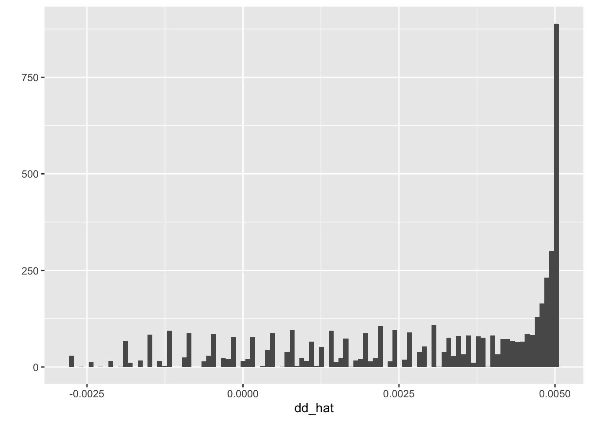

6.6 Hanmer and Kalkan (2013)
Hanmer and Kalkan (2013) make an important observation: a “typical” scenario \(X_s\) might product an atypical quantity of interest.
To remedy these concerns, they suggest setting the “other” covariate to all combinations that appear in the data set, compute the quantity of interest for all those scenarios, and then average them.
First, let’s see how the second difference from the previous chapter varies across all the existing combinations of the other covariates. We don’t need a CI, so we don’t need to use KTW’s simulation method–we can just use predict().
This can be numerically demanding, so I’m taking a random sample of 5,000 observations from BDE’s example data set to illustrate the computation.
# load data
scobit <- haven::read_dta("data/scobit.dta") %>%
filter(newvote != -1) %>%
sample_n(5000)
# fit model (nagler's specification in bde table 1 on p. 263)
f <- newvote ~ poly(neweduc, 2, raw = TRUE) + closing + poly(age, 2, raw = TRUE) + south + gov
fit <- glm(f, data = scobit, family = binomial(link = "probit"))
# four scenarios of the second difference; 10th to 90th percentile for both
# note: 1st lo/hi refers to neweduc; 2nd refers to closing
s_lo_lo <- scobit %>% # start with the observed data set
select(age, south, gov) %>% # select the "other" covariates
mutate(neweduc = quantile(scobit$neweduc, probs = 0.1),
closing = quantile(scobit$neweduc, probs = 0.1))
pi_lo_lo_hat <- predict(fit, newdata = s_lo_lo, type = "response")
s_hi_lo <- scobit %>% # start with the observed data set
select(age, south, gov) %>% # select the "other" covariates
mutate(neweduc = quantile(scobit$neweduc, probs = 0.9),
closing = quantile(scobit$neweduc, probs = 0.1))
pi_hi_lo_hat <- predict(fit, newdata = s_hi_lo, type = "response")
s_lo_hi <- scobit %>% # start with the observed data set
select(age, south, gov) %>% # select the "other" covariates
mutate(neweduc = quantile(scobit$neweduc, probs = 0.1),
closing = quantile(scobit$neweduc, probs = 0.9))
pi_lo_hi_hat <- predict(fit, newdata = s_lo_hi, type = "response")
s_hi_hi <- scobit %>% # start with the observed data set
select(age, south, gov) %>% # select the "other" covariates
mutate(neweduc = quantile(scobit$neweduc, probs = 0.9),
closing = quantile(scobit$neweduc, probs = 0.9))
pi_hi_hi_hat <- predict(fit, newdata = s_hi_hi, type = "response")
# ml estimate
dd_hat <- (pi_hi_hi_hat - pi_lo_hi_hat) - # effect of education when closing is high
(pi_hi_lo_hat - pi_lo_lo_hat) # effect of education when closing is low
qplot(dd_hat, bins = 100)
mean(dd_hat)## [1] 0.002918702sd(dd_hat)## [1] 0.002185804You can see that we get quite a lot of variation in the quantity of interest, depending on the value we choose for the other covariates.
I’ve chatting with Michael Hanmer about this, and I think he agrees with me that it’s valuable to at least compute (if not present in the paper) the variation in the quantity of interest across all observed values of the other covariates. Knowing the distribution (in addition to the average) is helpful. We might descibe the second difference here as about 0.005, give or take 0.003 or so, depending on the values of the other covariates.
The we can use KTW’s method to get a confidence interval for the average across the observed values.
# simulate beta_tildes using KTW's method
beta_tilde <- mvtnorm::rmvnorm(2000, mean = coef(fit), sigma = vcov(fit))
# four scenarios of the second difference; 10th to 90th percentile for both
# note: 1st lo/hi refers to neweduc; 2nd refers to closing
s_lo_lo <- scobit %>% # start with the observed data set
select(age, south, gov) %>% # select the "other" covariates
mutate(neweduc = quantile(scobit$neweduc, probs = 0.1),
closing = quantile(scobit$neweduc, probs = 0.1))
f_s <- update(f, NULL ~ .) # remove lhs for use below
mf <- model.frame(f_s, s_lo_lo)
X_s <- model.matrix(mf, s_lo_lo)
eta_tilde <- X_s%*%t(beta_tilde) # simulations of linear predictor
pi_lo_lo_tilde <- pnorm(eta_tilde) # simulations of expected value
# note: I only care to "keep" things with the _lo_lo tag, everything
# else gets overwritten below.
# hi; lo
s_hi_lo <- scobit %>% # start with the observed data set
select(age, south, gov) %>% # select the "other" covariates
mutate(neweduc = quantile(scobit$neweduc, probs = 0.9),
closing = quantile(scobit$neweduc, probs = 0.1))
f_s <- update(f, NULL ~ .) # remove lhs for use below
mf <- model.frame(f_s, s_hi_lo)
X_s <- model.matrix(mf, s_hi_lo)
eta_tilde <- X_s%*%t(beta_tilde) # simulations of linear predictor
pi_hi_lo_tilde <- pnorm(eta_tilde) # simulations of expected value
# lo; hi
s_lo_hi <- scobit %>% # start with the observed data set
select(age, south, gov) %>% # select the "other" covariates
mutate(neweduc = quantile(scobit$neweduc, probs = 0.1),
closing = quantile(scobit$neweduc, probs = 0.9))
f_s <- update(f, NULL ~ .) # remove lhs for use below
mf <- model.frame(f_s, s_lo_hi)
X_s <- model.matrix(mf, s_lo_hi)
eta_tilde <- X_s%*%t(beta_tilde) # simulations of linear predictor
pi_lo_hi_tilde <- pnorm(eta_tilde) # simulations of expected value
# hi; hi
s_hi_hi <- scobit %>% # start with the observed data set
select(age, south, gov) %>% # select the "other" covariates
mutate(neweduc = quantile(scobit$neweduc, probs = 0.9),
closing = quantile(scobit$neweduc, probs = 0.9))
f_s <- update(f, NULL ~ .) # remove lhs for use below
mf <- model.frame(f_s, s_hi_hi)
X_s <- model.matrix(mf, s_hi_hi)
eta_tilde <- X_s%*%t(beta_tilde) # simulations of linear predictor
pi_hi_hi_tilde <- pnorm(eta_tilde) # simulations of expected value
# ktw simulations of second difference
dd_tilde <- (pi_hi_hi_tilde - pi_lo_hi_tilde) - # effect of education when closing is high
(pi_hi_lo_tilde - pi_lo_lo_tilde) # effect of education when closing is low
avg_dd_tilde <- apply(dd_tilde, 2, mean)
# 90% CI using ktw simulations
quantile(avg_dd_tilde, probs = c(0.05, 0.95))## 5% 95%
## 0.002731359 0.014179453